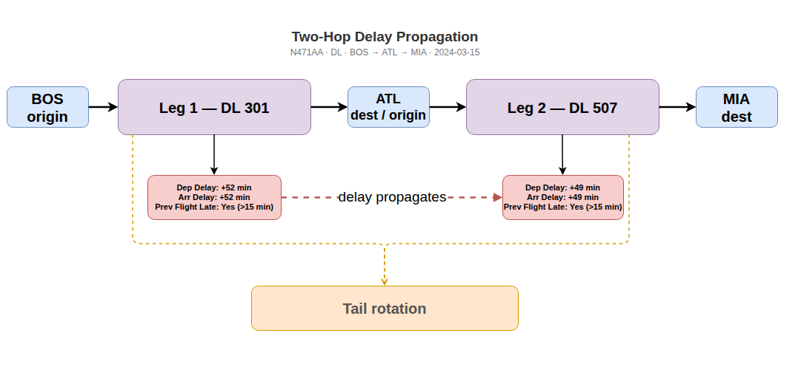
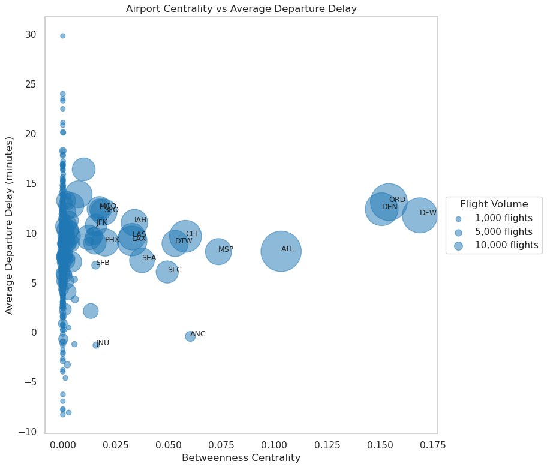
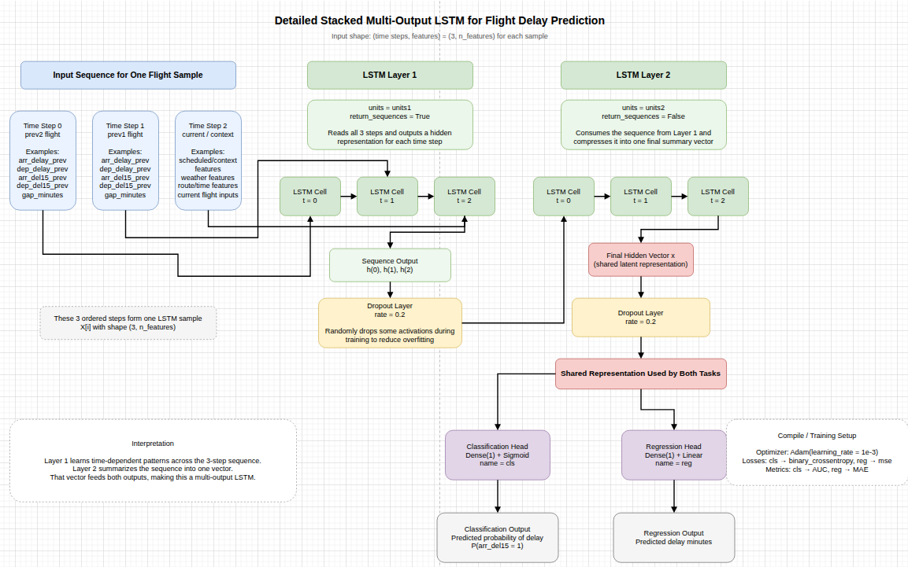
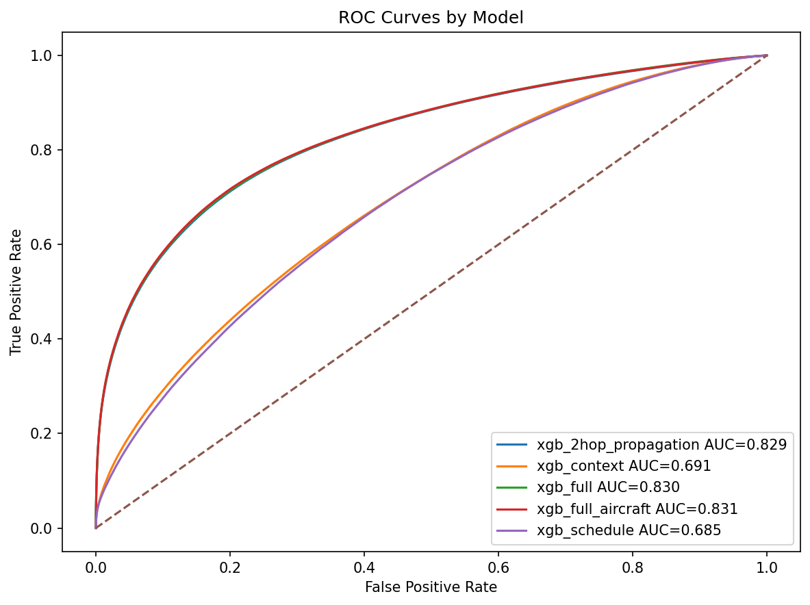
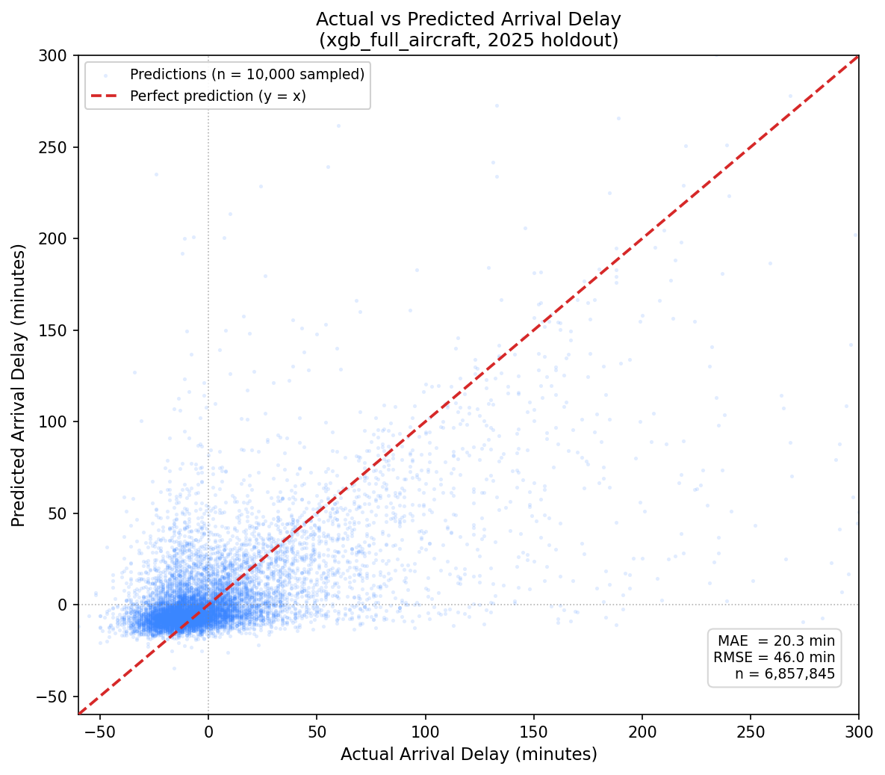
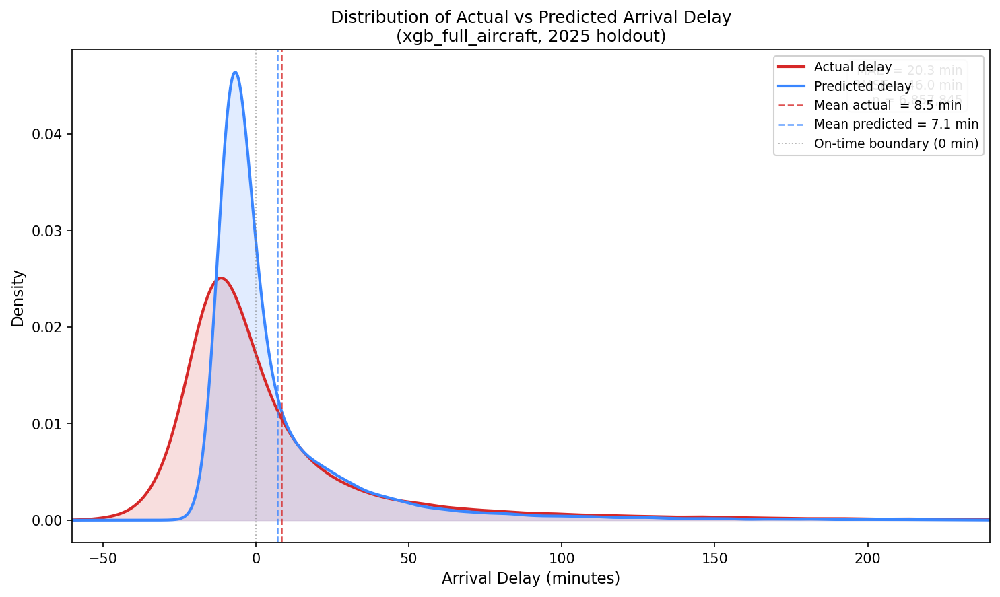
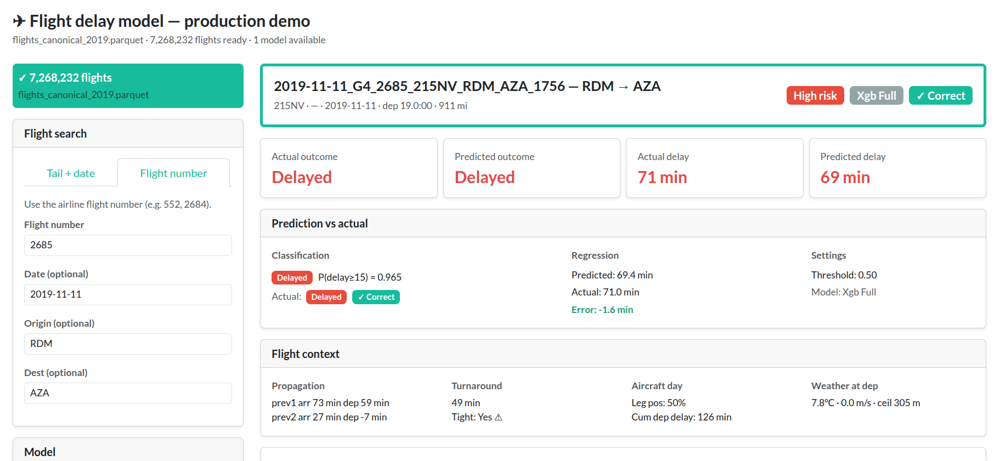
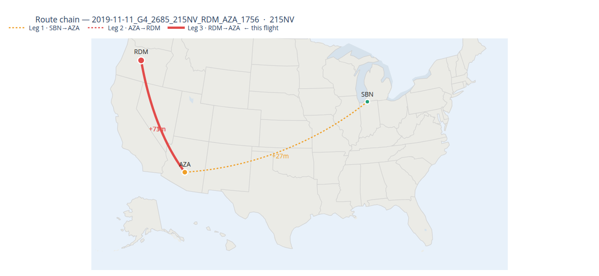

From Prediction to Digital Twin: A Propagation-Aware Machine Learning Framework for Flight Delay Modeling
Machine Learning
Aviation
Flight Delays
LSTM
XGBoost
Polars
1 Introduction & Background
1.1 Motivation
Flight delays represent one of the most visible and persistent operational challenges in modern aviation. In 2025 alone, nearly 25% of U.S. domestic flights failed to arrive on time, marking one of the worst on-time performance levels in over a decade [1]. At scale, these disruptions impose significant societal and economic costs—U.S. travelers collectively lost over 1.5 million hours (171 years) waiting on delayed flights [2], while delays across global air travel totaled millions of hours annually [3].
A single disruption rarely remains isolated. Instead, delays propagate through tightly coupled airline operations, affecting aircraft rotations, crew assignments, passenger connections, and airport congestion. Empirical studies of the U.S. air transportation network show that primary delays—caused by weather, congestion, or operational issues—can cascade and amplify across the network, leading to systemic disruptions that impact a significant portion of flights [4]. More recent research further demonstrates that accurately modeling delay propagation and absorption dynamics is essential for improving prediction performance and operational resilience [5].
Understanding the mechanisms of delay propagation is therefore critical for improving airline efficiency, reducing operational costs, and enhancing passenger reliability. As air traffic demand continues to grow and systems become increasingly interconnected, the ability to model and predict these cascading effects represents a key challenge—and opportunity—for modern aviation analytics.
1.3 Research Questions
This study seeks to answer the following questions:
- To what extent does upstream aircraft delay propagation influence downstream flight delay outcomes?
- Which features — including operational, weather, and network-based variables — provide the strongest predictive signal under realistic pre-departure constraints?
- How do different machine learning approaches (tree-based vs. sequence-based) perform on large-scale, temporally structured aviation data?
- Can a propagation-aware modeling framework serve as a foundation for real-time, network-level prediction and simulation systems in aviation?
1.4 What This Research Contributes
This research contributes a propagation-aware machine learning framework for flight delay prediction that explicitly models delay transmission across aircraft rotations. By introducing a two-hop representation of upstream flight state and enforcing strict pre-departure feature availability, the approach captures the operational dynamics underlying delay formation while remaining suitable for real-world deployment.
The study demonstrates the effectiveness of this framework at scale, training and evaluating models on approximately 70 million U.S. flight records using time-aware validation. Results show that delay propagation is the dominant predictive signal, significantly outperforming models that treat flights independently.
Beyond predictive performance, this work establishes the architectural foundation for AeroFlux — a real-time, network-aware system designed to evolve into a digital twin of the national airspace, enabling forward simulation, disruption propagation analysis, and proactive operational decision-making.
The ultimate objective of this work is to move beyond static prediction and toward dynamic, system-level reasoning in aviation operations. By combining propagation-aware modeling with real-time data integration and simulation capabilities, this research aims to enable predictive intelligence systems that can anticipate, propagate, and mitigate disruptions across the air transportation network. This vision is realized through AeroFlux, which represents a step toward a fully operational digital twin of the U.S. airspace.
2 Data
2.1 Data Sources & Pipeline
2.1.1 Data Pipeline
For each year of processing (2015-2025) the pipeline integrates three independent data streams — Bureau of Transportation Statistics (BTS) on-time performance records, NOAA Global Surface Hourly weather observations, and airport reference dimensions — into a unified analytical dataset suitable for delay prediction modeling. This process constitutes a data fusion framework, in which heterogeneous data sources are aligned and combined across temporal, spatial, and operational dimensions to enhance the representational richness of the dataset. Figure 1 provides a schematic overview of each stage, and the sections below describe each stage in turn. To run the pipeline or see how the code works see data_pipeline in the code base. Extensive use of Python Polars features were used to help with data processing efficiency.
2.1.2 Data Sources
The pipeline integrates three independent data streams: Bureau of Transportation Statistics (BTS) on-time performance records, NOAA Global Surface Hourly weather observations, and airport reference dimensions. Flight performance data are sourced from the BTS Transtats PREZIP endpoint, which publishes monthly on-time reporting files for all U.S. carriers, providing flight-level records including scheduled and actual departure and arrival times, delay durations, cancellation indicators, and delay-cause variables [6]. Weather observations are obtained from the NOAA NCEI global-hourly dataset via a REST API, providing sub-hourly surface measurements — temperature, wind speed, wind direction, and ceiling height — joined to flights using a backward-looking as-of temporal join [24]. Airport and station reference data are drawn from the OurAirports CSV registry and the NOAA Integrated Surface Database (ISD) station history file, supplying the geographic coordinates and ICAO codes required to link flight records to their corresponding weather stations [25], [26].
FAA aircraft registry variables — including number of seats, engine count, and aircraft type — were initially excluded due to a temporal mismatch between the available 2025 registry snapshot and the historical flight data. However, because these physical characteristics are not meaningfully time-dependent, they were reintroduced as an additional feature engineering step during the ML pipeline and form part of the xgb_full_aircraft feature set.
Table 1 summarises all primary data sources used in the pipeline.
| Source | Description | URL |
|---|---|---|
| BTS Transtats — On-Time Performance | Monthly carrier on-time performance records; primary source of flight departure, arrival, delay, and cancellation data. | transtats.bts.gov |
| NOAA NCEI — Integrated Surface Database (ISD) | Global hourly surface weather observations from 14,000+ stations spanning 1901–present; used for station metadata and weather-to-flight spatial joins. | ncei.noaa.gov/products/land-based-station/integrated-surface-database |
| NOAA NCEI — Global Hourly Data Search | Programmatic API access to the NCEI global-hourly subset; supports station search and date-range subsetting. | ncei.noaa.gov/access/search/data-search/global-hourly |
| OurAirports — Open Data Downloads | Airport reference files with IATA/ICAO codes, coordinates, and metadata; GitHub-hosted daily dumps used as the canonical source. | ourairports.com/data |
| FAA Aircraft Registry | Aircraft physical characteristics including seat count, engine count, and aircraft type; 2025 snapshot used for time-invariant features in the xgb_full_aircraft feature set. | registry.faa.gov/aircraftinquiry |
2.1.3 Ingestion
Each data stream is ingested independently and cached to Parquet before any downstream processing begins. This decouples the expensive download and format-conversion steps from feature engineering, allowing the pipeline to be re-run without re-fetching raw data.
BTS flight records are downloaded as monthly ZIP archives from the BTS Transtats PREZIP endpoint using an HTTP session with exponential backoff (up to 6 retries, base delay of 2 seconds). Each archive is extracted, parsed into a Polars DataFrame with explicit schema inference, and serialized to Parquet. Empty strings,
"NA", and"NULL"values are treated as nulls at parse time.Weather observations are retrieved from the NOAA NCEI REST API in station-month chunks of 5 stations per request, returned as JSON, and persisted to monthly Parquet cache files. A progressive fallback strategy handles malformed or truncated responses by splitting the date window from 15-day to 7-day to 3-day to 1-day chunks, and finally retrying each station individually if necessary.
Airport and station reference data are loaded from CSV (OurAirports and NOAA ISD history) and held in memory as dimension tables for spatial and timezone joins downstream.
2.1.4 Cleaning and Normalization
Flight records with cancellations, diversions, or missing critical timestamps are removed, and duplicate records are eliminated. Numeric delay fields (DepDelay, ArrDelay) and their binary indicators (DepDel15, ArrDel15) are null-filled to zero for non-cancelled flights. Cancellation and diversion flags are cast to binary integers.
Weather records undergo field-level parsing to extract structured values from NOAA’s packed string format:
TMP→ temperature in °C (integer divided by 10)WND→ wind direction (degrees) and wind speed (m/s, divided by 10)CIG→ ceiling height in meters
Observations where all three primary meteorological fields are null are dropped. Records are deduplicated on (station, valid_ts), keeping the last observation per timestamp.
Airport-to-station mapping is constructed by matching each BTS airport to its nearest ISD weather station using a nearest-neighbour procedure over geodetic distance. Timezone resolution uses the timezonefinder library, with a fallback to a longitude-based UTC offset estimate for airports that cannot be resolved to a canonical IANA zone. For this study there were only 2 stations out of 360 that could not be located.
2.1.5 Timestamp Alignment and Temporal Join
Correct temporal alignment is the most consequential and error-prone step in the pipeline. The process involves three stages:
1. Local timestamp construction. BTS departure and arrival times are stored as four-digit integers in local airport time (e.g., 1435 = 14:35). These are zero-padded and parsed into naive local datetimes using the flight date. A known edge case arises when a flight departs late at night and arrives after midnight. For example, a flight with a scheduled departure of 23:45 and arrival of 00:30 will have both times recorded as integers on the same FlightDate:
CRSDepTime = 2345
CRSArrTime = 0030A naive parser would read the arrival as earlier than the departure on the same date. The pipeline detects this condition — where arr_ts < dep_ts — and adds one calendar day to the arrival timestamp, correctly placing it on the following date.
2. UTC projection. All local datetimes are converted to UTC using ZoneInfo-based offsets for both flight timestamps and NOAA weather observation timestamps. Any timestamp that cannot be resolved — due to a missing timezone or conversion error — is set to null and excluded from downstream joins. A one-hour offset error at a UTC−5 airport, for example, would cause the as-of join to select weather observations from the wrong side of a frontal passage, corrupting both meteorological predictors and propagation-chain features.
3. As-of join. Once both datasets share a common UTC timeline, flight records are joined to weather observations using a backward-looking as-of join: for each departure or arrival event, the most recent weather observation at the corresponding station that precedes the event time is selected, within a 2-hour tolerance window. Observations outside the tolerance are left as null rather than matched to a stale reading. Separate as-of joins are performed for the origin station at departure time and the destination station at arrival time, yielding paired meteorological snapshots for both endpoints of every flight.
For example, consider a flight departing ATL at 14:32 UTC. The pipeline looks backward through ATL’s weather observations and selects the most recent one recorded before that time — say, a station report at 14:20 UTC. That 12-minute-old observation is attached to the flight as its departure weather snapshot.
If the most recent observation is older than 2 hours — for instance, the last report was at 11:45 UTC — the weather fields are left as null rather than attached, since a reading that stale is unlikely to reflect actual conditions at departure.
ATL weather observations:
11:45 UTC -> temp: 18°C, wind: 12 m/s <- too old (> 2h), not used
14:20 UTC -> temp: 22°C, wind: 8 m/s <- selected (most recent before 14:32)
14:55 UTC -> temp: 23°C, wind: 7 m/s <- in the future, not used
Flight departs ATL at 14:32 UTC
dep_temp_c = 22.0
dep_wind_speed_m_s = 8.0The same process is repeated independently for the arrival airport at the flight’s arrival time, yielding a second weather snapshot for the destination.
This approach correctly handles the irregular cadence of surface weather reporting — naive equi-joins on rounded timestamps would systematically introduce look-ahead bias or large temporal gaps.
2.1.6 Postprocessing and Output
After feature engineering, the pipeline performs a final cleanup pass before writing outputs. Because the fully enriched dataset contains hundreds of columns — raw BTS fields, intermediate join keys, duplicate timestamp formats, and processing artifacts — only the modeling-relevant subset is retained. This selection is driven by a configured column list; any requested column not present in the data is logged as a warning and skipped.
Final outputs are written as annual Parquet files. The primary modeling dataset contains one row per flight with all joined weather, operational, and propagation features attached. Alongside it, separate Parquet tables are written for aircraft rotation sequences, propagation chains, airport-time aggregates, and route-time aggregates, which are consumed independently during the ML pipeline.
2.1.7 Feature Engineering
Three families of derived features are constructed from the aligned dataset, spanning flight-level identifiers, airport-level congestion context, and route-level propagation state. All features are strictly restricted to information available at or before scheduled departure time, ensuring no look-ahead bias.
2.1.7.1 Flight-Level Features
Flight-level features establish the core identity of each observation and capture schedule structure, operational outcomes, and temporal context. A unique flight identifier is constructed from carrier, tail number, origin, destination, and scheduled departure time. Aircraft rotation sequences link successive legs flown by the same tail number, forming the backbone of the propagation feature set.
2.1.7.2 Airport-Level Features
Airport-level features aggregate traffic volume, delay rates, and congestion indicators within configurable rolling time windows around each departure. These features capture the systemic load at both origin and destination airports independently of any individual aircraft’s history.
2.1.7.3 Route-Level and Propagation Features
Route-level features encode delay transmission along aircraft rotation chains. A late-aircraft delay on an inbound leg is explicitly linked to the downstream departure it constrains, allowing the model to condition on upstream disruption state at prediction time. The two-hop propagation architecture, described below, operationalizes this mechanism as a structured feature family.
2.1.7.4 The Two-Hop Propagation Architecture
A central contribution of this framework is the explicit modeling of delay carryover across aircraft rotations through a two-hop propagation structure. A two-hop flight represents a single aircraft operating two consecutive legs on the same day, connected by a turnaround at an intermediate airport. When the first leg arrives late, the delayed aircraft becomes the inbound for the second leg, compressing or eliminating the scheduled ground time and propagating the delay forward.
Figure 2 illustrates this for tail N471AA operating BOS → ATL → MIA: a 52-minute departure delay on Leg 1 carries through the ATL turnaround and manifests as a 49-minute departure delay on Leg 2, despite no adverse weather at ATL.

The turnaround buffer between consecutive legs is defined as:
\[ \text{Turnaround}_i = \text{DepartureTime}_i - \text{PreviousArrivalTime}_i \]
A tight turnaround compresses the airline’s ability to absorb inbound lateness, making this interval one of the most operationally informative features in the model. The propagation mechanism is captured through the prev_arr_late_15 and rotation_continuity_flag columns, allowing the model to condition on upstream disruption state when predicting downstream delays.
Why two hops? The two-hop window balances propagation depth against feature complexity and temporal leakage risk. A single-hop representation misses the accumulated stress that builds across a multi-leg aircraft day, while deeper windows expand the feature space rapidly and increase the risk of incorporating state that was not yet observable at prediction time. Two hops provides a practical, well-motivated approximation of the delay carryover window most relevant to pre-departure prediction.
2.1.7.5 Feature Summary
Table 2 provides a complete inventory of all engineered features, organized by family.
| Family | Feature(s) | Role |
|---|---|---|
| Flight identity | FlightDate, Reporting_Airline, Tail_Number, Origin, Dest, route_key, flight_id |
Core identifiers; link feature tables and define route context |
| Schedule & timing | CRSDepTime, DepTime, CRSArrTime, ArrTime, UTC timestamp variants |
Schedule adherence, temporal ordering, weather join keys |
| Delay targets | ArrDelay, ArrDel15, DepDelay, DepDel15, Cancelled, Diverted |
Primary response variables and operational outcome filters |
| Surface movement | TaxiOut, TaxiIn, Distance, ActualElapsedTime |
Operational complexity and route structure |
| Delay cause | CarrierDelay, WeatherDelay, NASDelay, LateAircraftDelay |
Descriptive analysis and delay-driver interpretation |
| Temporal / calendar | Departure hour, weekday, month, holiday indicators, days_to_nearest_holiday, is_weekend |
Cyclic demand, seasonal patterns, calendar effects |
| Airport reference | Latitude, longitude, IATA/ICAO codes, timezone | Weather station mapping and timestamp normalization |
| Weather station ref. | NOAA station ID, station timezone, airport-to-station mapping | UTC conversion and weather-to-flight spatial joins |
| Weather | dep_temp_c, dep_wind_speed_m_s, dep_wind_dir_deg, dep_ceiling_height_m, arr_* variants |
Meteorological conditions at departure and arrival; as-of joined within a 2-hour pre-departure window |
| Two-hop propagation | prev1_arr_delay, prev1_dep_delay, prev1_arr_del15, prev1_dep_del15, prev2_arr_delay, prev2_dep_delay, prev2_arr_del15, prev2_dep_del15, prev1_turnaround_minutes, time_since_prev2_arrival_minutes |
Upstream delay state across the two most recent aircraft legs; dominant predictive signal |
| Rotation state | rotation_continuity_flag, aircraft_leg_number_day, relative_leg_position, has_prev_leg, has_next_leg, is_middle_leg, tight turnaround flags |
Aircraft sequence position and vulnerability to upstream propagation |
| Aircraft metadata | aircraft_age, aircraft_no_eng, aircraft_no_seats, aircraft_year_mfr |
Fleet composition signal; time-invariant FAA registry features |
| Airport-time context | Hourly flight counts, average/median delay, delay rate, cancellation rate, taxi metrics, rolling means over 1h/3h/6h | Airport congestion and short-horizon system state |
| Route-time context | Hourly route counts, mean route delay, route delay rate, rolling means over 1h/3h/6h | Recent route-specific conditions and network-level delay tendencies |
2.1.8 Sample Dataset
Table 3 shows three example records from the final modeling dataset, illustrating how flight operational data, weather observations, and propagation features are combined into a single row per flight.
| Field | Record 1 | Record 2 | Record 3 |
|---|---|---|---|
| FlightDate | 2023-06-15 | 2023-06-15 | 2023-06-16 |
| Reporting_Airline | WN | AA | UA |
| Tail_Number | N8731A | N3CDAA | N76502 |
| Origin | ATL | DFW | ORD |
| Dest | ORD | LAX | EWR |
| CRSDepTime | 0800 | 1430 | 0630 |
| DepDelay | 0 | 47 | 112 |
| ArrDelay | -3 | 38 | 98 |
| ArrDel15 | 0 | 1 | 1 |
| dep_hour_local | 8 | 14 | 6 |
| dep_weekday_local | 3 | 3 | 4 |
| dep_month_local | 6 | 6 | 6 |
| dep_temp_c | 21.4 | 34.2 | 14.8 |
| dep_wind_speed_m_s | 4.2 | 9.1 | 11.3 |
| dep_ceiling_height_m | 3200 | 9999 | 600 |
| arr_temp_c | 18.1 | 22.3 | 12.1 |
| arr_wind_speed_m_s | 6.7 | 3.4 | 14.2 |
| arr_ceiling_height_m | 2800 | 9999 | 450 |
| prev1_arr_delay | 0 | 52 | 89 |
| prev1_arr_del15 | 0 | 1 | 1 |
| prev1_turnaround_minutes | 52 | 28 | 18 |
| prev2_arr_delay | 0 | 12 | 34 |
| prev2_arr_del15 | 0 | 0 | 1 |
| rotation_continuity_flag | 1 | 1 | 1 |
| aircraft_leg_number_day | 2 | 3 | 4 |
Note Table 3 is for demonstration purposes.
2.2 Limitations in Data
Several structural limitations of the dataset should be acknowledged:
- BTS delay categories are self-reported across five broad buckets, obscuring compounding causes — a late aircraft delay may itself originate from a weather event several legs upstream.
- Weather observations are spatially approximate; ISD station measurements may not capture localized runway-level conditions or sub-hourly convective events.
- Network effects are only partially visible — route and airport aggregates cannot fully represent cascading disruptions originating at distant hubs beyond the two-hop propagation window.
- Operational factors including crew scheduling, gate conflicts, maintenance holds, and ATC staffing are absent from BTS records entirely.
- FAA aircraft metadata is drawn from a 2025 registry snapshot applied to historical data, introducing minor inconsistencies where aircraft were reconfigured or retired during the study period.
Despite these limitations, the dataset provides a strong foundation for large-scale delay prediction.
2.3 EDA
2.3.1 Distribution of Delays
2.3.2 Delays by Time of Day
2.3.3 Weather vs Delay
2.3.4 Delay Propagation
2.3.5 Centrality Metrics

3 Problem Formulation and Models
3.1 Problem Definition
We formulate flight delay prediction as two related supervised learning tasks over temporally ordered flight observations. For each flight \(i\), let \(\mathbf{x}_i \in \mathbb{R}^p\) denote the feature vector constructed from information available at or before prediction time. All features are strictly restricted to pre-departure information, ensuring a realistic operational setting without look-ahead bias.
We define two prediction targets:
\[ Y_i^{(reg)} = \text{ArrDelay}_i \]
\[ Y_i^{(cls)} = \begin{cases} 1 & \text{if } \text{ArrDel15}_i = 1 \\ 0 & \text{otherwise} \end{cases} \]
The classification task estimates the probability of a material arrival delay:
\[ f_{cls}(\mathbf{x}_i) = P(Y_i^{(cls)} = 1 \mid \mathbf{x}_i) \]
The regression task estimates the expected delay magnitude in minutes:
\[ f_{reg}(\mathbf{x}_i) = \mathbb{E}[Y_i^{(reg)} \mid \mathbf{x}_i] \]
This study follows a two-phase modeling strategy. Phase 1 focused on a single-year dataset (2019) using baseline models to validate features and establish a foundational understanding of the problem. Phase 2 expanded to a large-scale, multi-year dataset (~70M records) with more advanced models and a richer feature set. The transition reflects a shift from exploratory modeling to scalable, production-oriented system design.
3.2 XGBoost Models
XGBoost was selected as the primary predictive model because gradient-boosted tree ensembles consistently achieve strong performance on large-scale structured tabular data [11]. The method captures nonlinear operational interactions, tolerates heterogeneous feature scales without normalization, and remains computationally tractable at the scale of tens of millions of flight records. Unlike linear models, XGBoost can implicitly model feature interactions — such as the combined effect of a tight turnaround window on an already-stressed aircraft — without requiring manual interaction terms.
Classification and regression are modeled as separate but complementary tasks. The classification model estimates the probability of a material arrival delay; the regression model estimates delay magnitude in minutes.
3.2.1 Classification Model
The XGBoost classification model estimates the probability that a flight will experience a significant arrival delay:
\[ \hat{p}_i = P(Y_i^{(cls)} = 1 \mid \mathbf{x}_i) = \sigma\left( \sum_{m=1}^{M} f_m(\mathbf{x}_i) \right) \]
where
\[ \sigma(z)=\frac{1}{1+e^{-z}} \]
is the logistic sigmoid function and \(M = 300\) gradient-boosted trees. The binary decision rule applies a threshold of 0.5:
\[ \hat{Y}_i^{(cls)} = \begin{cases} 1 & \text{if } \hat{p}_i \ge 0.5 \\ 0 & \text{otherwise} \end{cases} \]
3.2.2 Regression Model
The XGBoost regression model directly predicts arrival delay in minutes as an additive ensemble of regression trees:
\[ \hat{Y}_i^{(reg)} = \sum_{m=1}^{M} g_m(\mathbf{x}_i) \]
At each boosting iteration \(t\), the model minimizes the regularized objective:
\[ \mathcal{L}^{(t)} = \sum_{i=1}^{n} l\!\left(y_i,\, \hat{y}_i^{(t-1)} + f_t(\mathbf{x}_i)\right) + \Omega(f_t) \]
where \(l(\cdot)\) is the task-specific loss (log-loss for classification, squared error for regression) and the complexity penalty is:
\[ \Omega(f) = \gamma T + \frac{1}{2}\lambda \sum_{j=1}^{T} w_j^2 \]
with \(T\) denoting the number of leaves and \(w_j\) the leaf weights. This penalty discourages overly complex trees and provides implicit regularization against overfitting on the large but temporally structured dataset.
3.3 LSTM Model
A Long Short-Term Memory (LSTM) neural network was developed to model flight delay propagation using sequential aircraft rotation history. Unlike tree-based models that treat each flight independently, the LSTM learns temporal dependencies across prior legs operated by the same tail number — naturally representing how delays cascade through a rotation chain. For a 2-hop propagation network, the current flight is conditioned on the two most recent upstream legs:
\[ JFK \rightarrow BOS \rightarrow ATL \rightarrow MIA \]
If the current flight is \(ATL \rightarrow MIA\), then \(JFK \rightarrow BOS\) and \(BOS \rightarrow ATL\) form its sequential context.

Each flight \(i\) is encoded as a 3D sequence tensor \(\mathbf{X}_i \in \mathbb{R}^{T \times F}\) where \(T = 3\) timesteps represent the previous-2 leg, previous-1 leg, and current flight context. The LSTM processes each timestep and updates a hidden state:
\[ \mathbf{h}_t = \text{LSTM}(\mathbf{x}_t,\ \mathbf{h}_{t-1}) \]
The final hidden state \(\mathbf{h}_T\) feeds two independent output heads — a classification head \(\hat{p}_i = \sigma(W_c\, \mathbf{h}_T + b_c)\) and a regression head \(\hat{y}_i = W_r\, \mathbf{h}_T + b_r\) — trained jointly via a combined loss:
\[ \mathcal{L} = \mathcal{L}_{cls} + \lambda\, \mathcal{L}_{reg} \]
A dropout rate of 20% was applied to LSTM outputs during training. Despite its architectural strengths, the LSTM was not carried forward to the full 10-year training run due to higher memory requirements, slower training at scale (\(N > 5\)M samples), and reduced interpretability relative to XGBoost. It is retained here to document its design and to motivate future sequence-based extensions.
3.4 Training Strategy
3.4.1 Phase 1: 2019 Baseline Models
Phase 1 established baseline performance on a single year of data (2019) using a set of standard classifiers. These models serve as the interpretability and performance floor against which the Phase 2 XGBoost results are compared.
- Logistic Regression — linear baseline with log-odds formulation
- Ridge Logistic Regression — L2-regularized to address multicollinearity
- Decision Tree — interpretable rule-based classifier
- Random Forest — ensemble baseline via bagged decision trees
- K-Nearest Neighbors — instance-based classifier over feature space
- PCA — unsupervised dimensionality reduction for feature analysis
- K-Means Clustering — unsupervised grouping of flight delay patterns
Phase 1 results are presented alongside Phase 2 results in Section 5 for direct comparison.
3.4.2 Phase 2: Time-Aware Cross-Validation
Standard random \(k\)-fold cross-validation is inappropriate for time-series data because it permits future observations to leak into training folds, producing optimistically biased estimates. Instead, a rolling-origin expanding-window strategy was employed, where each fold trains on all years up to a cutoff and validates on the immediately following year:
\[ \mathcal{D}_{\text{train}}^{(k)} = \{2015, \ldots, t_k\}, \qquad \mathcal{D}_{\text{val}}^{(k)} = \{t_k + 1\} \]
| Fold | Training Years | Validation Year |
|---|---|---|
| 1 | 2015–2018 | 2019 |
| 2 | 2015–2019 | 2020 |
| 3 | 2015–2020 | 2021 |
| 4 | 2015–2021 | 2022 |
| 5 | 2015–2022 | 2023 |
This design directly simulates production deployment conditions: the model is trained on all available history, then evaluated on the next operational year it has never seen.
4 Experimental Setup
4.1 Data Splits
The dataset was partitioned strictly chronologically to preserve temporal realism and eliminate any possibility of look-ahead bias. Future observations were never permitted to influence model training or validation at any stage.
| Dataset | Years | Rows |
|---|---|---|
| Training | 2015–2023 | 54,620,695 |
| Validation | 2024 | 6,947,566 |
| Test (Holdout) | 2025 | 6,857,845 |
| Final Refit Train | 2015–2024 | 61,568,261 |
The 2025 holdout set represents completely unseen flight operations and serves as the primary benchmark for all reported final performance metrics. No information from 2025 was available at any point during model development, hyperparameter search, or feature selection.
Following hyperparameter selection, the model was retrained on all pre-test data:
\[ \mathcal{D}_{\text{final train}} = \{2015, \ldots, 2024\} \]
The full refit dataset contained 61,568,261 rows. For memory efficiency, a stratified 35% sample (21,548,891 rows) was drawn, preserving the class distribution while reducing peak memory requirements.
4.2 Hardware
Phase 2 models were trained on a local workstation running Ubuntu 22.04.5 LTS with an AMD Ryzen 9 7900X (24 logical cores, up to 5.65 GHz) and 96 GB of system memory. Model training was conducted on CPU; a discrete NVIDIA GPU (4 GB VRAM) was available but did not yield improved performance at this scale. The ML pipeline is configured to use GPU if desired. A better strategy might be to leverage cloud resources in the future and leave the work station for experimentation.
4.3 Hyperparameters
A grid search was conducted over four candidate XGBoost configurations, each evaluated under the five-fold rolling cross-validation procedure.
| Config | Trees (\(M\)) | Depth (\(d\)) | LR (\(\eta\)) | Subsample (\(s\)) | Colsample (\(c\)) |
|---|---|---|---|---|---|
xgb_00 |
250 | 4 | 0.05 | 0.8 | 0.8 |
xgb_01 |
250 | 4 | 0.05 | 0.8 | 1.0 |
xgb_02 |
300 | 6 | 0.05 | 0.8 | 0.8 |
xgb_03 |
400 | 6 | 0.03 | 0.8 | 0.8 |
The best-performing configuration was xgb_02, with the following parameters:
\[ M = 300,\quad d = 6,\quad \eta = 0.05,\quad s = 0.8,\quad c = 0.8 \]
| Hyperparameter | Value |
|---|---|
| n_estimators | 300 |
| max_depth | 6 |
| learning_rate | 0.05 |
| subsample | 0.8 |
| colsample_bytree | 0.8 |
| min_child_weight | 1 |
| reg_lambda | 1.0 |
| tree_method | hist |
| device | cpu |
The hist tree method was selected for computational efficiency. The moderate depth of 6 and conservative learning rate of 0.05 balance expressiveness with generalization, while 80% subsampling of rows and columns introduces stochasticity that reduces variance.
5 Results
5.1 Model Performance
5.1.1 Cross-Validation Performance
All cross-validation results use the default parameter set (\(n_\text{estimators}=250\), \(\text{max\_depth}=4\), \(\eta=0.05\)) across five rolling time folds (validation years 2019–2023).
| Feature Set | AUC | F1 | Precision | Recall | Accuracy | AUC SD | F1 SD |
|---|---|---|---|---|---|---|---|
| xgb_schedule | 0.6491 | 0.0706 | 0.7029 | 0.0376 | 0.8284 | 0.0173 | 0.0193 |
| xgb_context | 0.6791 | 0.0855 | 0.7094 | 0.0459 | 0.8295 | 0.0120 | 0.0189 |
| xgb_2hop_propagation | 0.8195 | 0.4700 | 0.7414 | 0.3465 | 0.8663 | 0.0114 | 0.0338 |
| xgb_full | 0.8215 | 0.4758 | 0.7468 | 0.3512 | 0.8675 | 0.0113 | 0.0332 |
| xgb_full_aircraft | 0.8222 | 0.4766 | 0.7505 | 0.3511 | 0.8680 | 0.0118 | 0.0342 |
| Feature Set | MAE Mean | MAE SD | RMSE Mean | RMSE SD |
|---|---|---|---|---|
| xgb_schedule | 23.71 | 0.96 | 49.05 | 4.05 |
| xgb_context | 22.80 | 0.98 | 48.53 | 4.11 |
| xgb_2hop_propagation | 18.82 | 0.59 | 43.20 | 3.13 |
| xgb_full | 18.69 | 0.54 | 41.99 | 3.05 |
| xgb_full_aircraft | 18.73 | 0.55 | 42.02 | 3.12 |
Note
Standard deviations are approximated as \(\text{SD} \approx (\text{max} - \text{min}) / 4\).
The schedule-only and context baselines (AUC ≈ 0.649 and 0.679) confirm that static schedule features and weather alone cannot reliably discriminate delayed from on-time flights. The step change occurs when 2-hop delay propagation features are added: AUC rises to 0.820 and F1 to 0.470, demonstrating that prior-leg performance is the dominant signal. Adding the full operational feature set (xgb_full) yields a further modest gain (AUC 0.822, F1 0.476), and incorporating FAA aircraft registry features (xgb_full_aircraft) achieves the best CV performance (AUC 0.822, F1 0.477) with the lowest regression error (MAE 18.73 min). AUC variability is low across all propagation-aware models (SD ≈ 0.011–0.012), confirming stable rank-order discrimination across a decade of operations including the COVID-19 disruption year (fold 2, val 2020).
5.1.2 Final Holdout Results (2025)
The two panels below separate the pre-tuning multi-model comparison from the tuned final model. The pre-tuning run used \(n_\text{estimators}=250\), \(\text{max\_depth}=4\); the tuned run used the best parameters identified in a prior experiment (\(n_\text{estimators}=300\), \(\text{max\_depth}=6\), all other hyperparameters unchanged), trained on the full 2015–2024 dataset.
| Feature Set | AUC | F1 | Precision | Recall | Accuracy | MAE | RMSE |
|---|---|---|---|---|---|---|---|
| xgb_schedule | 0.6849 | 0.1014 | 0.7559 | 0.0544 | 0.7853 | 26.45 | 57.37 |
| xgb_context | 0.6906 | 0.1038 | 0.7672 | 0.0556 | 0.7857 | 25.87 | 56.96 |
| xgb_2hop_propagation | 0.8287 | 0.5267 | 0.7830 | 0.3968 | 0.8410 | 21.25 | 49.65 |
| xgb_full | 0.8302 | 0.5293 | 0.7850 | 0.3993 | 0.8417 | 21.11 | 48.40 |
| xgb_full_aircraft | 0.8308 | 0.5321 | 0.7849 | 0.4025 | 0.8422 | 21.12 | 48.43 |
| Metric | Value |
|---|---|
| AUC | 0.8402 |
| F1 | 0.5542 |
| Precision | 0.7938 |
| Recall | 0.4257 |
| Accuracy | 0.8473 |
| Metric | Value |
|---|---|
| MAE (minutes) | 20.32 |
| RMSE (minutes) | 46.03 |
\[ \text{AUC} = 0.8402, \quad F_1 = 0.5542, \quad \text{MAE} = 20.32\ \text{min}, \quad \text{RMSE} = 46.03\ \text{min} \]
Discrimination (AUC = 0.840). The model correctly ranks a randomly selected delayed flight above a randomly selected on-time flight 84.0% of the time — a meaningful improvement over the pre-tuning holdout AUC of 0.831 for the same feature set, and consistent with the CV mean of 0.822, reflecting the benefit of the expanded 2015–2024 refit dataset and tuned depth.
Precision (79.4%). When the model predicts a delay, it is correct approximately four times out of five, making it practically useful for triggering downstream operational actions where false alarms carry real cost.
Recall (42.6%). The model recovers approximately 42.6% of all true delay events at the default 0.5 threshold, reflecting class imbalance in the dataset. The threshold can be lowered to improve recall for use cases requiring higher sensitivity.
Regression error (MAE = 20.3 min, RMSE = 46.0 min). A 20-minute MAE is reasonable given that delay magnitude is influenced by late-breaking weather, ATC decisions, and mechanical events not fully observable pre-departure. The higher RMSE reflects difficulty predicting severe tail delays (\(> 2\) hours).

5.1.3 Prediction Diagnostics

Figure Figure 6 presents a scatter plot of actual versus predicted arrival delay for 10,000 randomly sampled flights from the 2025 holdout set. The dashed red line represents perfect prediction (\(\hat{y} = y\)); points clustering along this line indicate accurate estimates, while vertical spread reflects prediction error. The model performs well in the on-time and moderate-delay range but underestimates severe delays, consistent with the elevated RMSE relative to MAE.

Figure Figure 7 overlays kernel density estimates of the actual and predicted delay distributions across all 6,857,845 flights in the 2025 holdout set. The close alignment of the two curves near the mode confirms the model captures the central tendency of the delay distribution accurately, while the narrowing of the predicted distribution’s right tail reflects the tendency of gradient boosting to shrink extreme predictions toward the mean — a known limitation that explains the gap between MAE (20.3 min) and RMSE (46.0 min).
5.1.4 Operational Impact
The 2025 holdout set contained 6,857,845 flight records, of which approximately 23.4% were delayed, yielding roughly 1,604,736 true delay events.
| Outcome | Approximate Count | Note |
|---|---|---|
| Total flights evaluated | 6,857,845 | |
| True delay events (actual) | ~1,604,736 | 23.4% base delay rate |
| Delay alerts issued (predicted positive) | ~861,831 | |
| Correct alerts — True Positives | ~683,215 | Recall × true delay events |
| False alerts — False Positives | ~178,616 | Flagged but flight was on time |
| Missed delays — False Negatives | ~921,521 | Delayed flights the model did not flag |
| Correct non-alerts — True Negatives | ~5,074,493 | On-time flights correctly left unflagged |
Note
Counts are derived from reported precision (0.794) and recall (0.426). True Positives = recall × 1,604,736 ≈ 683,215. Total predicted positive = TP / precision ≈ 683,215 / 0.794 ≈ 860,472. False Positives = predicted positive − TP ≈ 177,257. False Negatives = true delays − TP ≈ 921,521. True Negatives = total − TP − FP − FN ≈ 5,075,953. Verify against confusion matrix outputs for exact figures.
At this scale, the model issues approximately 2,360 delay alerts per day, of which approximately 79% are correct. A mean absolute error of 20.3 minutes means delay magnitude estimates are typically within one connection window of the true delay, making them operationally useful for rebooking triage at airports with 30-minute minimum connection times.
5.2 Baselines
Phase 1 baseline results (Logistic Regression, Ridge, Decision Tree, Random Forest, KNN) will be added here for direct comparison once consolidated. The table will report AUC, F1, Precision, Recall, MAE, and RMSE across all models side-by-side with the Phase 2 XGBoost results.
5.3 Feature Analysis
5.3.1 Feature Importance
| Rank | Feature | Importance | Description |
|---|---|---|---|
| 1 | prev1_arr_del15 | 0.5106 | Binary: inbound aircraft arrived ≥ 15 min late (immediate prior leg) |
| 2 | prev1_dep_del15 | 0.1247 | Binary: inbound aircraft departed ≥ 15 min late (immediate prior leg) |
| 3 | prev1_arr_delay | 0.1135 | Continuous arrival delay in minutes of the immediately prior leg |
| 4 | dep_hour_local | 0.0277 | Local departure hour of day |
| 5 | dep_time_bucket | 0.0267 | Discretized departure time window |
| 6 | prev1_turnaround_minutes | 0.0262 | Gate turnaround time between inbound arrival and scheduled next departure |
Delay propagation through aircraft rotations is the dominant predictive signal, accounting for over 75% of total model gain across the top three features alone. The binary flag prev1_arr_del15 alone contributes over half of all model importance (0.511), confirming that the single most informative question about any outbound flight is: was the same aircraft delayed on its way in?
Schedule timing features (dep_hour_local, dep_time_bucket) appear in the top six but at an order of magnitude less importance than propagation features. Aircraft metadata variables (aircraft_no_seats, aircraft_age, etc.), while individually modest, provided measurable incremental lift in ablation experiments.
5.3.2 Feature Set Comparison
To isolate the contribution of each feature category, four nested configurations were evaluated under identical cross-validation conditions:
| Feature Set | Description |
|---|---|
xgb_schedule |
Schedule and calendar features only |
xgb_context |
Schedule + weather + network congestion |
xgb_2hop_propagation |
All features except aircraft metadata |
xgb_full_aircraft |
Complete 37-feature set including aircraft metadata |
xgb_full |
xgb_full_aircraft excluding aircraft metadata |
The fully enriched xgb_full_aircraft model was the best overall performer. The largest single performance gain occurred when two-hop propagation features were added to the context feature set. Aircraft metadata provided a smaller but consistent additional improvement.
5.3.3 Computational Performance
The complete XGBoost pipeline — cross-validation across five folds, hyperparameter search across four configurations, final refit, and artifact generation — completed in approximately 1,035 seconds (~17.3 minutes) on CPU hardware using 8 parallel worker cores, demonstrating that XGBoost remains a practical choice for production-scale aviation delay forecasting without specialized compute infrastructure.
5.4 Model Limitations
- Finite propagation window. The 2-hop model only observes two upstream legs, missing accumulated stress that builds across longer aircraft days.
- Same-aircraft perspective only. Propagation is modeled along tail-number continuity; cross-aircraft network effects are not directly captured.
- No explicit airport network topology. Cascading hub disruptions are only partially visible through rolling airport aggregates.
- Unobserved operational factors. Crew scheduling, gate conflicts, and ATC staffing are absent from BTS records.
- XGBoost has no recurrent state. Unlike the LSTM, XGBoost cannot maintain hidden temporal state across timesteps beyond what is explicitly encoded as features.
- Feature explosion risk. Extending beyond 2 hops grows the feature space rapidly and increases temporal leakage risk.
6 Discussion
(REVIEW & ADD MORE)
7 Conclusion
(REVIEW & ADD MORE)
This study demonstrates how machine learning methods can be applied to understand delay dynamics…
Future work could extend this framework to larger airline networks and incorporate time-series modeling approaches…..etc.
Due to memory constraints, XGBoost models were trained using XGBoost’s native incremental API, distributing boosting rounds across years sequentially. Each year’s data was loaded, used for training, and immediately discarded before loading the next year, keeping peak RAM proportional to a single year of data (~7M flights).
8 Appendex
8.1 Introduction to AeroFlux: Real-Time Inference for Flight Delay Prediction
AeroFlux is a predictive intelligence system for U.S. domestic flight delays. Given a specific flight — identified by tail number, date, origin, and destination — it predicts whether that flight will arrive more than 15 minutes late and estimates the total delay in minutes.
Rather than treating each flight in isolation, AeroFlux models the full operational history of the aircraft: the two preceding legs, their on-time performance, turnaround time, cumulative delay buildup over the course of the day, and weather conditions at departure. This context-aware approach captures the cascading nature of flight delays in ways that single-flight models cannot.


8.1.1 AeroFlux is the precursor to a digital twin
AeroFlux is not yet a digital twin but will soon be one. A true digital twin would ingest live operational data in real time, continuously update its state, and support simulation — answering questions like what happens to the next four flights on this tail if this departure slips 45 minutes?
AeroFlux is the immediate precursor. The machine learning pipeline, feature engineering, model inference layer, and interactive interface are all in place. What it currently lacks is the live data feed connecting it to real-time flight state. That connection is the primary objective for the next phase of development. The progression looks like this:
Phase 1 — Historical Proof of Concept (complete) Baseline models trained, data and ML pipelines built, and an interactive prototype deployed. The foundation is in place: a working system that can ingest flight records, engineer operational context features, and produce interpretable delay predictions.
Phase 2 — Live Data & Comprehensive Modeling (next) Connect to FAA or a commercial flight data API to replace historical lookups with real-time inference. Layer in live weather and social media feeds, and research more robust modeling architectures that better capture spatial-temporal dependencies across a flight day. Enhancing the UI with beautiful data visualizations.
Phase 3 — Network Simulation Using Rust as a high-performance simulation engine, propagate predicted delays forward through the full rotation chain. Model downstream passenger connections, gate conflicts, and crew constraints — shifting AeroFlux from a single-flight predictor into a network-aware reasoning system.
Phase 4 — Digital Twin A continuously updated, bidirectional model of the entire U.S. domestic flight network. Full scenario simulation: what happens to 400 downstream flights if a hub goes offline? What’s the optimal recovery sequence after a ground stop? AeroFlux becomes a live mirror of the national airspace.
Beyond Phase 4 — The Intelligent Orchestration Layer This is where AeroFlux transcends flight delays entirely and becomes a framework for reasoning about any system of moving objects in physical space. The ability to model intent, predict state, and propagate consequences through a network of interdependent agents is one of the most valuable capabilities in safety-critical systems — and nowhere is this more consequential than in avionics. Air Traffic Control operates at the edge of human cognitive limits, managing hundreds of aircraft simultaneously with razor-thin margins for error. A system that can anticipate conflicts before they materialize, surface the highest-risk situations in real time, and suggest resolution paths doesn’t just improve efficiency — it fundamentally changes the error surface, shifting ATC from reactive management to proactive orchestration.
The architecture — real-time telemetry ingestion, predictive state modeling, network propagation, and scenario simulation — maps directly onto adjacent domains: urban air mobility fleets of autonomous air taxis, drone delivery networks optimizing thousands of concurrent last-mile routes, autonomous vehicle coordination across highway and urban grids, maritime vessel scheduling through congested port corridors, and satellite constellation management.
Official AeroFlux App - Note: this domain might change in the future. If this happens notify the authors for more information.
References
[1]
USAFacts Team, “What are the best and worst airports and airlines for on-time performance?” https://usafacts.org/articles/what-are-the-best-and-worst-airlines-for-on-time-performance/; USAFacts, 2025.
[2]
People Staff, “The world’s most delayed airline in 2025 might surprise travelers.” https://people.com/the-world-s-most-delayed-airline-in-2025-might-surprise-travelers-11870658; People, 2025.
[3]
SkyRefund, “SkyRefund analysis reveals US travelers lost 1.5 million hours to flight delays in 2025 — and what caused them.” https://www.prnewswire.com/news-releases/skyrefund-analysis-reveals-us-travelers-lost-1-5-million-hours-to-flight-delays-in-2025--and-what-caused-them-302675101.html; PR Newswire, Jan. 2026.
[4]
P. Fleurquin, J. J. Ramasco, and V. M. Eguiluz, “Systemic delay propagation in the US airport network,” Scientific Reports, vol. 3, no. 1, Jan. 2013, doi: 10.1038/srep01159.
[5]
J. Zhou, “Integrating delay-absorption capability into flight departure delay prediction.” 2025. Available: https://arxiv.org/abs/2512.08197
[6]
Bureau of Transportation Statistics, “Airline on-time performance data.” https://transtats.bts.gov/; U.S. Department of Transportation, 2025.
[7]
J. J. Rebollo and H. Balakrishnan, “Characterization and prediction of air traffic delays,” Transportation Research Part C, vol. 44, pp. 231–241, 2014.
[8]
J. Li, N. Chen, and J. Zhang, “Modeling and simulation of flight delay propagation based on complex networks,” Physica A, vol. 444, pp. 102–112, 2016.
[9]
T. Chen and C. Guestrin, “XGBoost: A scalable tree boosting system,” Proceedings of the ACM SIGKDD, 2016.
[10]
S. Hochreiter and J. Schmidhuber, “Long short-term memory,” Neural Computation, vol. 9, no. 8, pp. 1735–1780, 1997.
[11]
L. Grinsztajn, E. Oyallon, and G. Varoquaux, “Why do tree-based models still outperform deep learning on tabular data?” in Advances in neural information processing systems (NeurIPS), 2022. Available: https://arxiv.org/abs/2207.08815
[12]
L. Zhao et al., “Graph neural networks for air traffic flow prediction,” IEEE Access, vol. 8, pp. 134984–134994, 2020.
[13]
B. Yu, H. Yin, and Z. Zhu, “Spatio-temporal graph convolutional networks: A deep learning framework for traffic forecasting,” in Proceedings of the 27th international joint conference on artificial intelligence (IJCAI), AAAI Press, 2018, pp. 3634–3640.
[14]
R. W. Vos, J. Sun, and J. M. Hoekstra, “A transformer-based trajectory prediction model to support air traffic demand forecasting,” in Proceedings of the international conference on research in air transportation (ICRAT), 2024.
[15]
“Air traffic flow representation and prediction using transformer neural networks,” in SESAR innovation days, 2022.
[16]
S. Yoon and K. Lee, “MAIFormer: Multi-agent inverted transformer for flight trajectory prediction,” arXiv preprint arXiv:2509.21004, 2025.
[17]
F. Tao and M. Zhang, “Digital twin shop-floor: A new shop-floor paradigm towards smart manufacturing,” IEEE Access, vol. 7, pp. 7427–7438, 2019.
[18]
A. Fuller, Z. Fan, C. Day, and C. Barlow, “Digital twin: Enabling technologies, challenges and open research,” IEEE Access, vol. 8, pp. 108952–108971, 2020.
[19]
Federal Aviation Administration, “System wide information management (SWIM).” https://www.faa.gov/air_traffic/technology/swim, 2025.
[20]
NASA Ames Research Center, “Digital twin simulator of the national airspace system (NAS).” https://technology.nasa.gov/patent/TOP2-325; NASA, 2024.
[21]
Airspace Intelligence, “Flyways AI: Air traffic management platform.” https://www.airspace-intelligence.com/solutions/air-traffic-management; Airspace Intelligence, 2025.
[22]
M. Rodriguez, “Using real-time data and machine learning to improve air traffic management operations.” https://mosaicatm.com/2024/12/16/machine-learning-for-air-traffic-management/; Mosaic ATM, Dec. 2024.
[23]
Liu et al., “Digital twin-enabled delay diagnosis traceability and propagation process for airport flight ground service,” International Journal of Intelligent Systems, 2024, doi: 10.1155/int/7458758.
[24]
National Oceanic and Atmospheric Administration, “NCEI access services API: Global hourly weather dataset.” https://www.ncei.noaa.gov/access/services/data/v1; NOAA National Centers for Environmental Information, 2025.
[25]
National Oceanic and Atmospheric Administration, “Integrated surface database (ISD) station history metadata file.” https://www.ncei.noaa.gov/pub/data/noaa/isd-history.csv; NOAA National Centers for Environmental Information, 2025.
[26]
OurAirports, “OurAirports global airport database.” https://davidmegginson.github.io/ourairports-data/airports.csv; OurAirports, 2025.